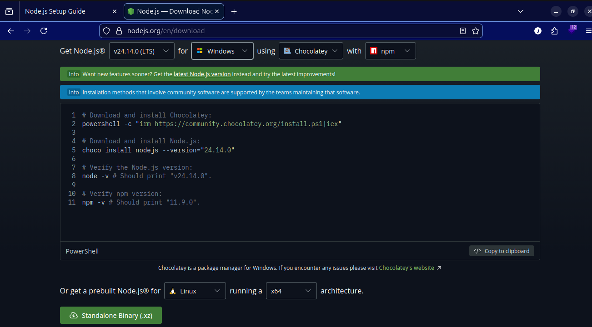

React Development Setup on Linux
Required Software
To work with React professionally, you will need to install Node.js and a code editor like Visual Studio Code. Basically, node is a runtime environment that allows you to run JavaScript code outside of a web browser, and Visual Studio Code is a popular code editor that provides a great development experience for JavaScript and React projects.
Download Visual Studio Code
Here is the installer matching your operating system.
-
Linux (64-bit)
Download VS Code for Linux
Here is how it should look after installation

Download Node.js
Here is the installer matching your operating system.
-
Linux (64-bit)
Download Node.js for Linux
Here is how it should look after installation
Required Extension
To enhance your development experience, you should install the following extensions in Visual Studio Code:
-
ES7+ React/Redux/React-Native snippets
This extension provides you with a collection of code snippets for React and Redux development, which can help you write code faster and more efficiently.
Basically, node is a runtime environment that allows you to run JavaScript code outside of a web browser, and Visual Studio Code is a popular code editor that provides a great development experience for JavaScript and React projects.